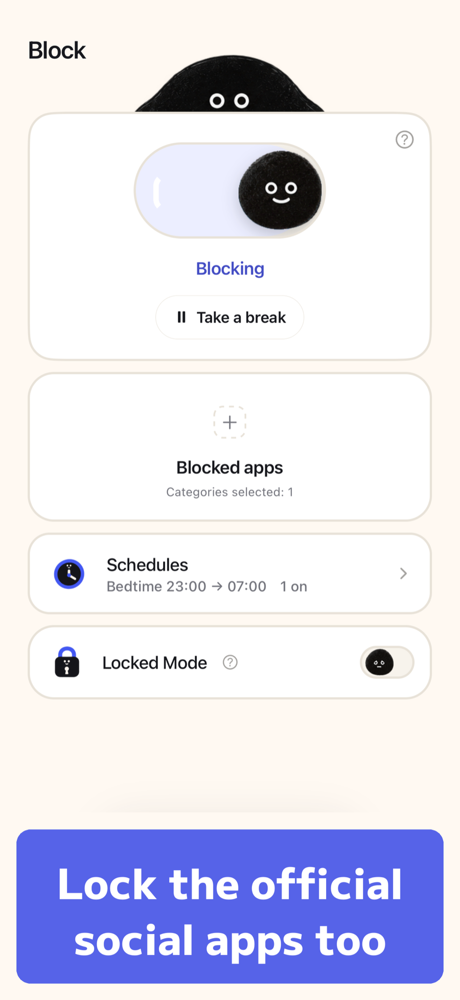
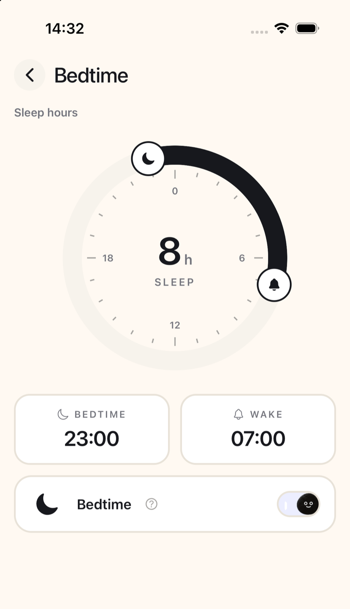

How to stop scrolling TikTok at night on iPhone (2026)
To stop scrolling TikTok at night on iPhone, schedule Downtime in Screen Time and turn on Block at Downtime with a Screen Time passcode, which blocks the whole app, messages included. To keep TikTok messages, open TikTok in minulo with For You hidden: messages stay, and hiding is free, no subscription needed. Sleep mode, which locks the official app by itself every night, is part of minulo Pro, and TikTok's own Sleep hours only mutes notifications.
TikTok's own night setting, Sleep hours, mutes push notifications after your sleep time starts and shows a reminder to take a break, but TikTok stays open. To actually stop it at night, schedule Downtime in iPhone Screen Time and turn on Block at Downtime with a passcode; that blocks TikTok messages too. Apple's iOS 27 user guide doesn't list this option. If you want to keep messages, open TikTok in minulo with For You hidden (free) and lock the official TikTok app when you get into bed. A free block lasts up to 2 hours, and Sleep mode, which turns the block on every night, is part of minulo Pro.
- Install minulo, tap Add a service on the home screen and choose TikTok.
- Tap the gear next to TikTok and hide For You. This is free, and messages keep working.
- When you get into bed, lock the official TikTok app in minulo's Block tab with Screen Time, free for up to 2 hours per block. Its icon then shows a block screen with an Open in minulo button.
- For a lock every night, use Sleep mode in minulo Pro, or Downtime with Block at Downtime (which blocks TikTok messages too). Apple's iOS 27 user guide doesn't list this option.
Written by Ayumu Kitabayashi, the developer of minulo. Facts about TikTok come from TikTok Help and facts about iPhone settings from Apple's iPhone User Guide, checked in October 2026. Menu names can change with app and iOS updates. This page gives practical steps, not medical advice.
| Method | What happens at night | Limits |
|---|---|---|
| Sleep hours (TikTok) | Mutes push notifications after your sleep time starts and reminds you to take a break | A reminder. TikTok stays open |
| Daily screen time (TikTok) | Notifies you when you reach your daily limit | Type the passcode shown on screen and you keep watching |
| Downtime + Block at Downtime (iOS 26) | TikTok can't be opened during the hours you set | Blocks the whole app, messages too. A passcode you chose yourself can be undone |
| Screen Time Schedule (iOS 27) | A night time window with the Time Allowance categories you allow | Needs iOS 27 on all your Apple devices. Whole apps |
| Sleep Focus | Filters notifications and calls | Doesn't block apps |
| minulo | TikTok opens with For You hidden (free); the official app can be locked for up to 2 hours per free block; with Pro, Sleep mode turns the block on every night, for example from 10 PM to 6 AM | Notifications from a locked official app don't arrive |
Turn on Sleep hours in TikTok
Tap Profile, then the Menu button ☰, Settings and privacy, Time and well-being and Screen time. Sleep hours is on that page. After your sleep time starts, TikTok mutes push notifications and shows a reminder in the app to consider taking a break. TikTok works out the end time from your age, for example at least 7 hours of sleep for people 18 and over. It helps you notice the time, but nothing is locked.
Block TikTok at night with Downtime
- Go to Settings › Screen Time › Downtime › Scheduled and set a start and end time, for example 11 PM to 7 AM.
- Set a Screen Time passcode, then turn on Block at Downtime. Without it, you only see a reminder.
- Make sure TikTok is not under Always Allowed.
- On iOS 26, tiktok.com in Safari needs its own entry under Never Allow in Content & Privacy Restrictions.
If you chose the passcode yourself, you can type it half asleep, so it works best when someone else sets it. Downtime also stops TikTok messages.
Keep messages at night with minulo
minulo opens TikTok's website inside the app. Tap the gear next to TikTok and turn on Recommendations (Hide For You, Explore and Create), or choose Every tab but DMs to keep only messages. Then lock the official TikTok app with Screen Time when you get into bed, so tapping its icon shows a block screen instead of the feed. A free block lasts up to 2 hours and you can start another right away. With minulo Pro, Sleep mode turns the block on at the same time every night, Work mode locks the apps you pick during your work hours on the days you choose, blocks can run longer, and Hard Mode makes turning it off take effort. If you also use Downtime, add minulo to Always Allowed so messages stay open.


In minulo's own anonymous usage data, most social media sessions happen between 8 pm and 1 am (Japan time, where most of the data comes from), so the hour before bed is the one to plan for.
Limits, so you can decide honestly: minulo can't change the official apps, so Reels and Shorts are hidden only inside minulo. While minulo blocks an official app, that app's notifications don't arrive, and minulo sends none of its own. Posting Stories, voice messages and calls aren't available, because the web versions of these networks don't have them. minulo runs on iPhone and Mac (the Mac app works in Safari and Chrome), not Android, and it is new, with few ratings. See what minulo can't do.
How to stop scrolling TikTok at night on iPhone
To stop scrolling TikTok at night on iPhone, schedule Downtime in Screen Time and turn on Block at Downtime with a Screen Time passcode, which blocks the whole app, messages included. To keep TikTok messages, open TikTok in minulo with For You hidden: messages stay, and hiding is free, no subscription needed. Sleep mode, which locks the official app by itself every night, is part of minulo Pro, and TikTok's own Sleep hours only mutes notifications.
Does TikTok have a bedtime mode?
TikTok has Sleep hours, but it only mutes notifications, while minulo opens TikTok with For You hidden for free. Sleep hours is on TikTok's Screen time page: after your sleep time starts it mutes push notifications and reminds you to take a break, but the app stays open.
How do I block TikTok at night but keep messages?
Screen Time can't do that, because it blocks the whole app. In minulo, open TikTok with For You hidden or with Every tab but DMs, and lock the official app at night. While it is locked, its notifications don't arrive.
Why doesn't TikTok's time limit stop me at night?
Daily screen time is a reminder. When you reach the limit you can close TikTok or type the passcode shown on screen to keep watching.
Can minulo block TikTok automatically every night?
Yes, with minulo Pro: Sleep mode turns the block on by itself every night at your bedtime and off at your wake time. On the free plan you start a block yourself, up to 2 hours each time.
Is there a free way to stop TikTok at night?
Yes. Downtime with Block at Downtime, Sleep Focus and TikTok's Sleep hours are free. In minulo, hiding For You is free, and locking the official app is free for up to 2 hours per block.
Related questions
Sources